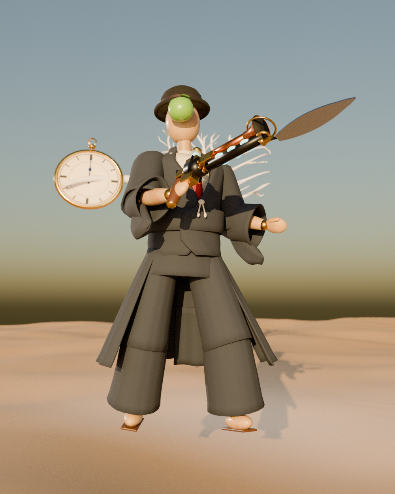

Falling asleep...
a surrealist shooter inside someone else's dream
Take a property from one thing. Give it to another. Fight your way down before the dreamer wakes.
Best for keyboard and mouse. Click the dream to capture the mouse, and press Esc to release it.
Jump alongside a wall to wall-run. Jump straight into one to climb. Run at a ledge to mantle or vault. Land on a brass rail to grind. Beds are trampolines. Step into a framed portal and keep your speed.
Deflects and hits build an enemy's posture. Break it, or wound it badly, and it kneels. A deathblow heals you and gives you its properties. A red 危 means the attack can't be blocked: jump or dash.
Absurd combos, such as stacking properties, new pairings, or giving things to yourself, raise Lucidity. That makes every property stronger and the dream stranger. At 100 the dreamer wakes and your run ends. Focusing calms it down.
Waking leaves memories, which become keepsakes you equip in notches. Scraps of the painting are hidden in every layer. Between layers, choose a whim. Clarity ranks earn points to spend on who the Figment becomes. Leave mid-night and Continue picks up at the layer you reached.
Some memories are held by more than anxieties: buried, stranded, stopped, sealed. The objective says what is wrong. The answer is always a property, given or taken.

A jointed wooden lay figure, the kind painters pose instead of a person. Black bowler, red scarf, and where the face should be, a green apple hanging in the air. There is no face because the painter never got that far.
You are the subject of L’Homme au Chapeau, a canvas Théo Vautrin began in the winter of 1958 and abandoned when he left town. You woke up on the sand with a gun that takes the qualities of things and gives them to other things, and a pull downward. You want to be finished.
The Juxtaposition Gun. Brass and walnut. The copper gramophone bell takes, the barrel ringed with glowing glass gives, and a palette-knife bayonet folds out underneath. Théo used to say a painting is just two things put next to each other until they mean a third.
The Night-Light. The candle that burned in the window every night for sixty years. It floats beside you in its jar. It knows the rules of the dream. It will not tell you what is at the bottom.
Each night that goes deep or strange enough leaves a memory behind. Memories add new properties to the dream and become keepsakes.
Wear memories as keepsakes. Each one takes up notches.
Every anxiety silenced, puzzle solved and memory freed adds to Clarity. Each rank is a point. What you choose here is kept, night after night.
between layers
Night-Light
1 2 3 to take one, or ← → and Enter
WASD move · QE down, up · Shift faster · drag or arrows to look · wheel to zoom · H hide this